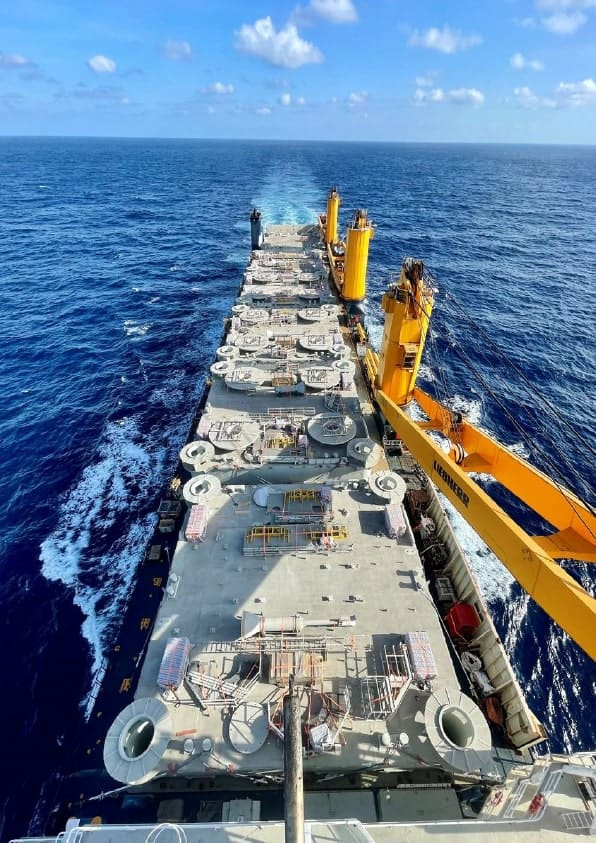
Transport international
Fret aérien, maritime et routier, import comme export, y compris colis lourds, hors gabarit et marchandises dangereuses.
Port-Gentil · Libreville · Houston
ART achemine, dédouane et livre les marchandises de ses clients, du départ jusqu'au site. Voici une vitrine à la hauteur de ce savoir-faire, et un ERP pour piloter chaque dossier.
Services
Du transport international à la gestion de projet, ART prend en charge chaque maillon du transit.

Fret aérien, maritime et routier, import comme export, y compris colis lourds, hors gabarit et marchandises dangereuses.
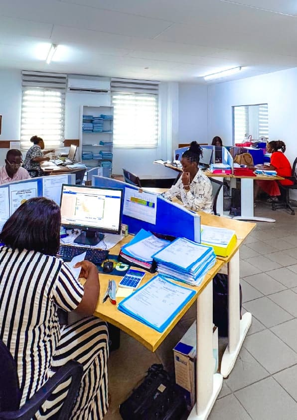
Constitution des dossiers et formalités douanières pour des marchandises libérées sans temps perdu.
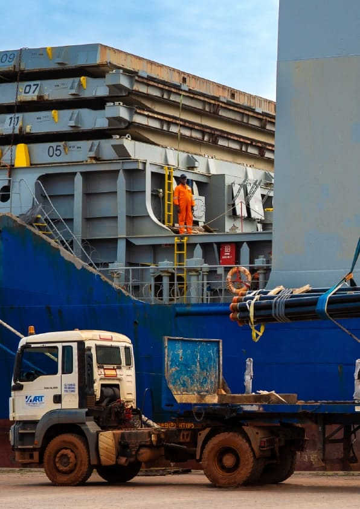
Levage, manutention et acheminement jusqu'au site du client avec une flotte dédiée.
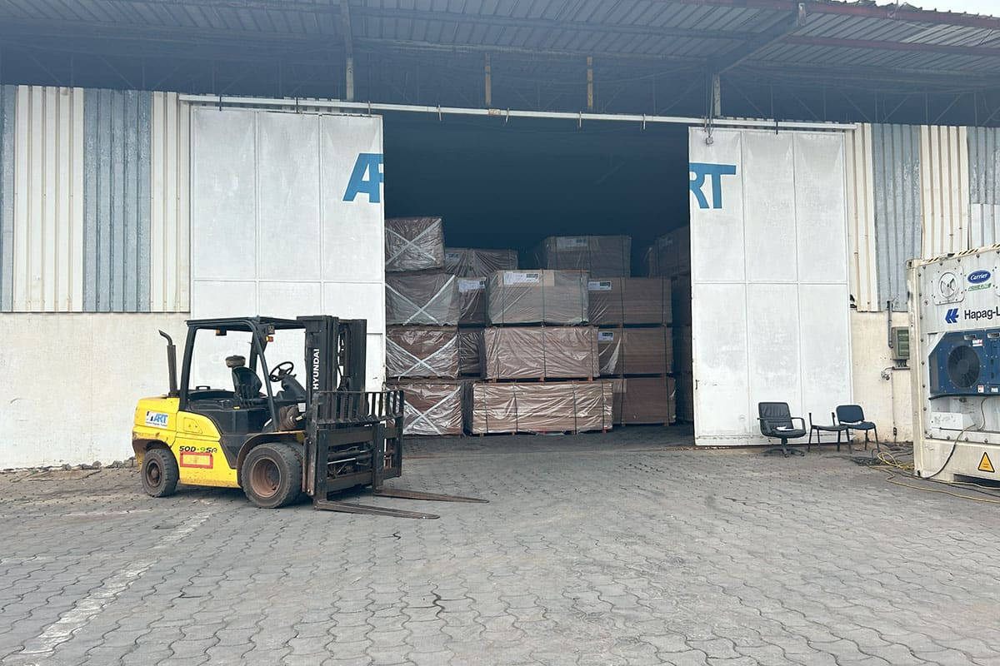
Entreposage, gestion de base logistique et optimisation de la chaîne d'approvisionnement.
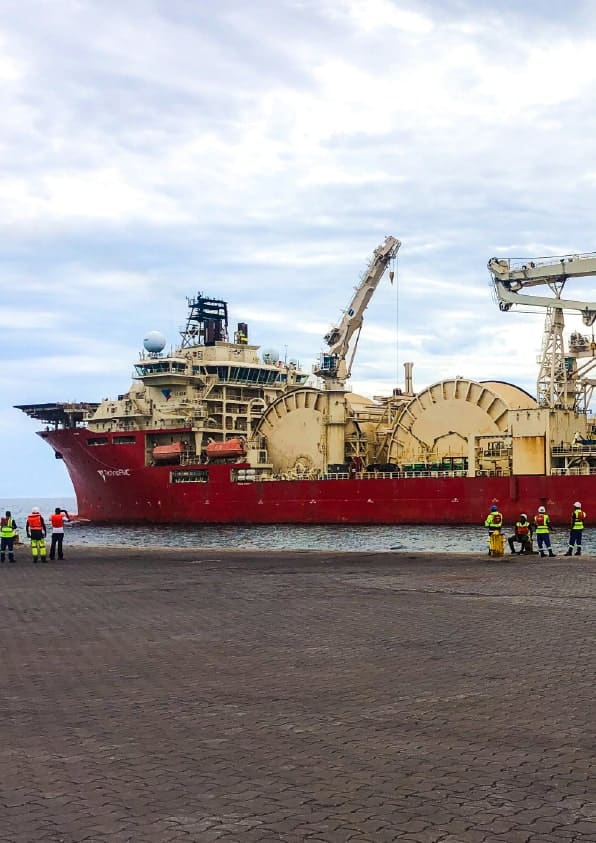
Escales de navires, consignation et services portuaires pour armateurs et opérateurs.
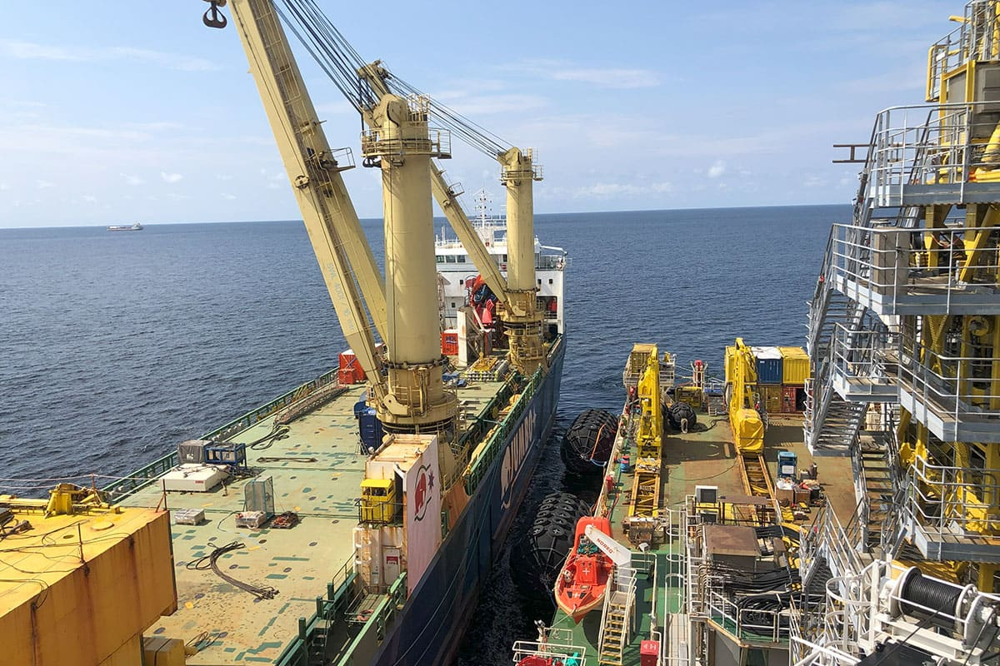
Coordination de projets complexes : planification, sous-traitants, supervision des opérations.
Sur le terrain
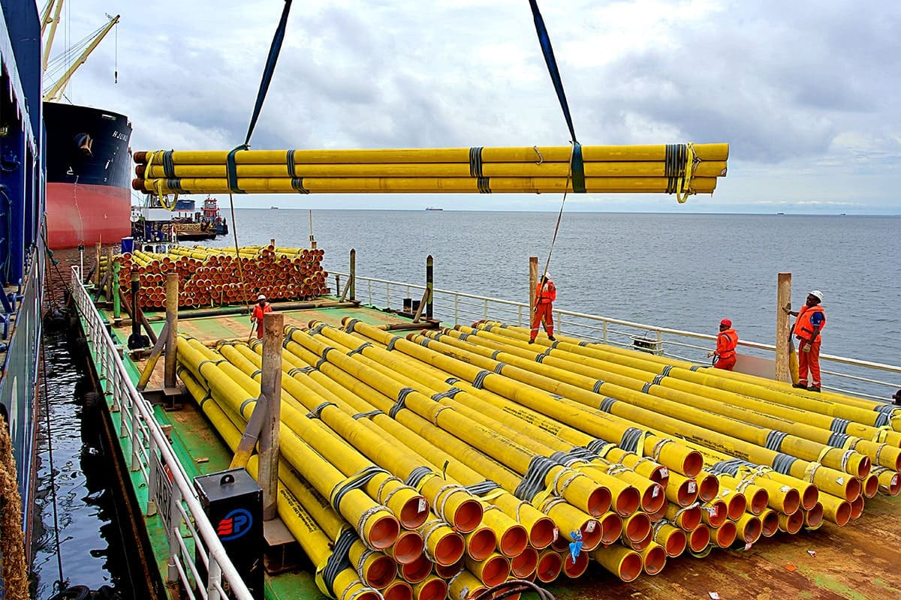
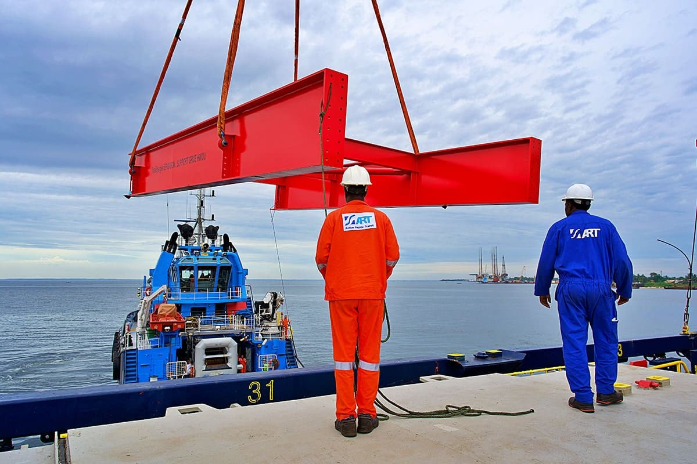
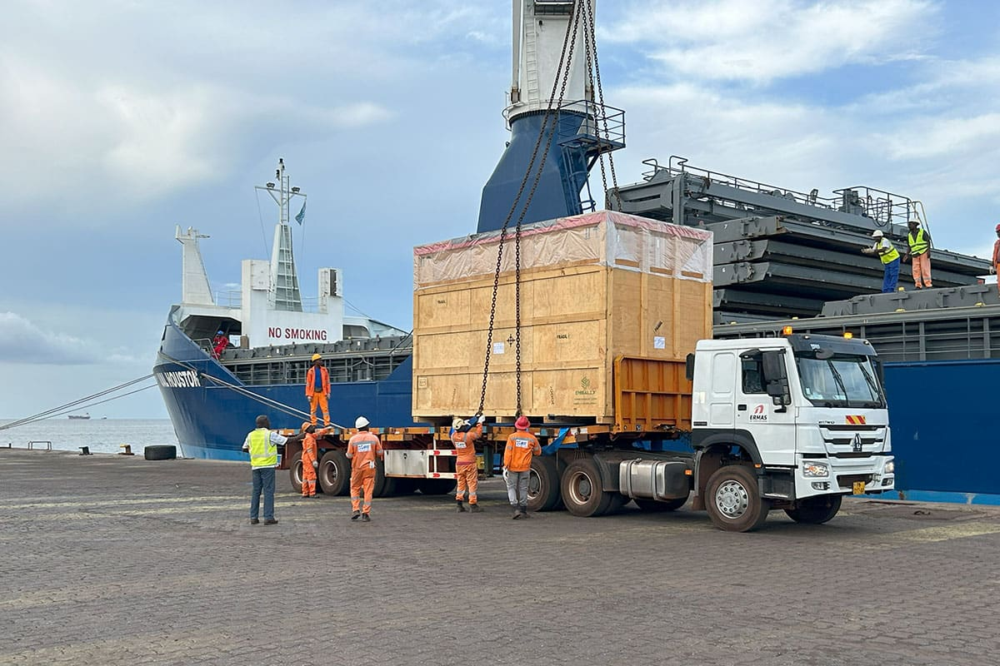
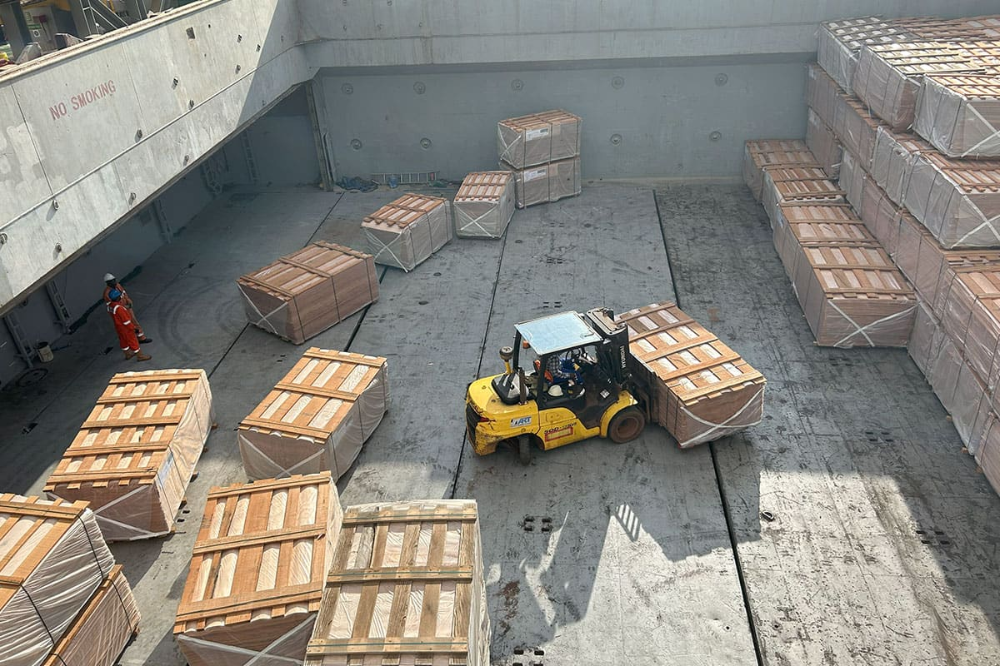
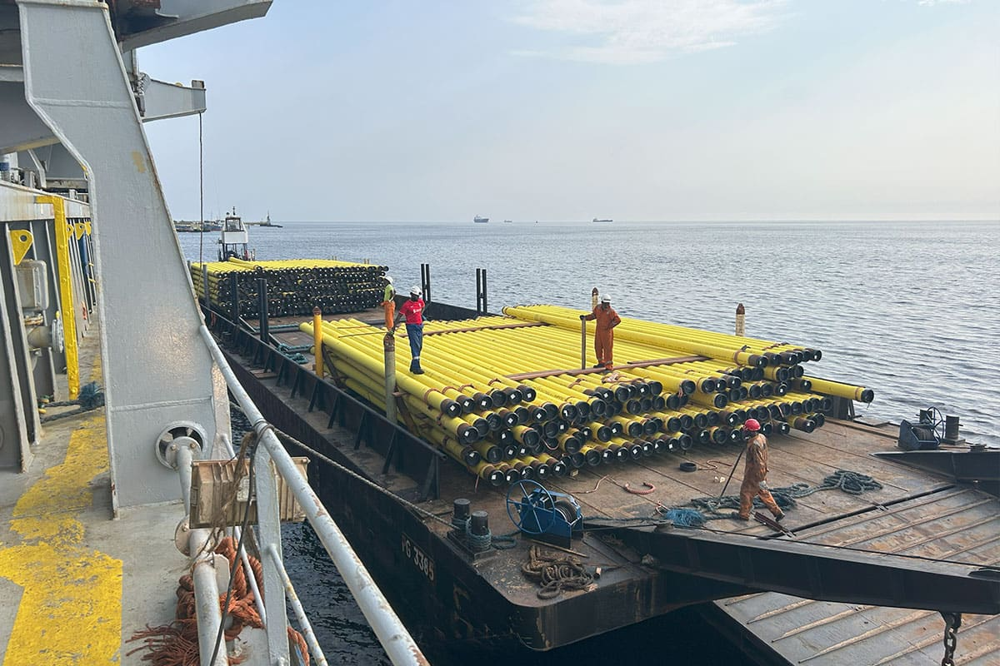
Présence
Implantée à Port-Gentil, capitale pétrolière du Gabon, à Libreville et à Houston, ART relie les zones de production à ses clients industriels.
La proposition
Un seul outil pour gérer le métier de transitaire, de l'ouverture du dossier à la facture, et un portail où les clients suivent eux-mêmes leur fret. La démo ci-dessous est interactive : cliquez, avancez une étape, créez un dossier.
Démonstration avec des données fictives. Sur mobile, ouvrez-la en plein écran.
Ouvrir l'ERP en plein écranDossiers, douane, flotte, entrepôt et facturation au même endroit, pour les équipes de Port-Gentil et de Libreville.
Le client voit son fret avancer en direct et télécharge ses documents.
Tableau de bord, alertes (douane, stockage, factures) et suivi des encours.
Un service digital à la hauteur d'un commissionnaire de rang international.
Mise en œuvre
Le site actuel reste la base : on ajoute la valeur là où elle compte le plus, sans tout casser.
Atelier avec l'équipe : parcours, informations à suivre, outils existants (dont Elyse Web).
Design de l'ERP et de la vitrine aux couleurs d'ART, validé avant développement.
Dossiers, suivi et documents pour quelques clients volontaires.
Ouverture à tous, formation des équipes de Port-Gentil et Libreville.
Cotations en ligne, alertes e-mail, tableaux de bord avancés, version anglaise.
Contact
Pour échanger sur cette proposition, l'e-mail est la voie la plus simple.